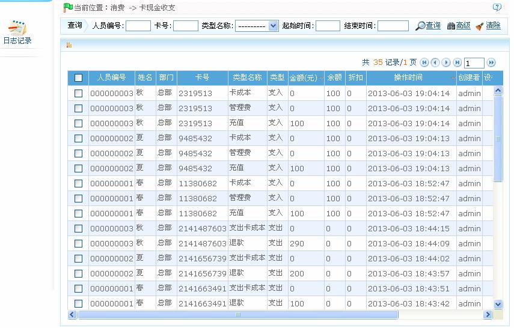

ID--8.5 卡现金收支
单击【消费】 【卡现金收支】，进入卡现金收支页面：
【卡现金收支】，进入卡现金收支页面：

用户可已在此窗口下方的列表中查看所有的卡现金收支明细。可以在查询栏中进行查询。
（1）、会出现纠错的两种情况：一是操作员按键操作失误，造成扣款错误，此时操作员可以通过消费机上的纠错按钮，返还已扣金额，并再次正确操作，成功扣款。纠错成功后将返回一条纠错记录至系统；二是用户刷卡消费时，遇到网络延时或网络断线的情况，如果系统“扣费成功”，但消费机显示“联机失败”，此时系统就会自动产生一条纠错记录，用户需重新刷卡进行当前的消费；
（2）、卡现金收支日志记录与导出操作，请参见附录1 常用操作。